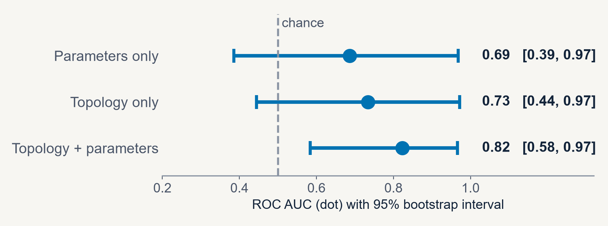
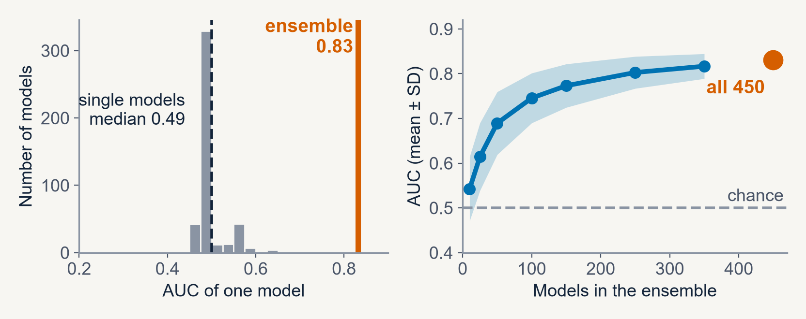
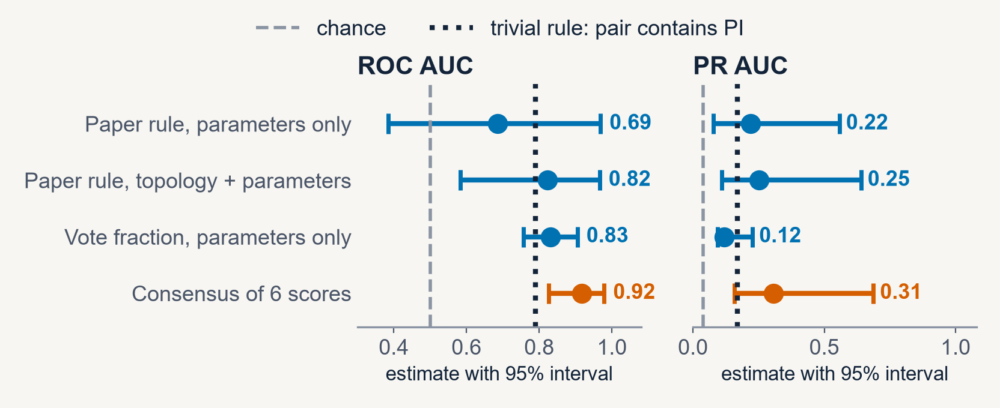

Systems Biology · Midterm presentation
Logical models for cancer drug-synergy prediction
Flobak et al. (2023), Frontiers in Systems Biology, and what happens when I test it
[Your name] · October 14, 2026
Background
Too many drug pairs to test
~200
approved cancer drugs
>10,000
possible drug pairs
Testing every drug pair experimentally is not feasible
Logical models explain mechanisms, but need heavy manual tuning
Calibrate the model automatically with a genetic algorithm, then predict synergy
Flobak et al., Frontiers in Systems Biology, 2023
Method
A calibrated logical model simulates each drug pair
1
CASCADE 2.0
144 nodes, 367 edges; signaling network of AGS gastric cancer cells
2
Calibrate
Genetic algorithm tunes logic rules to match 24 measured node states
3
Ensemble
Hundreds of calibrated models instead of one
4
Simulate drugs
Drug target node fixed OFF; growth read from survival and death nodes
5
Score synergy
Bliss: synergy if growth(a,b) < growth(a) × growth(b)
Output: a ranked list of 153 drug pairs, compared with the 6 pairs observed as synergistic
Flobak et al., Frontiers in Systems Biology, 2023
Paper results
Reported performance and a mouse confirmation
0.69
ROC AUC on 153 pairs (random: 0.50)
0.18
PR AUC (random: 0.04)
6/153
pairs observed synergistic (4%)
4 of 6
synergies found by testing only the top 35 pairs
IN VIVO CHECK
TAK1 + PI3K inhibition
Synergy confirmed in cells and in mouse xenografts (n = 30)
STATED LIMITS
- Wrong network edges quickly degrade predictions
- Only 24 of 144 nodes have calibration data
Flobak et al., Frontiers in Systems Biology, 2023
My reproduction
Reproduction: the interval is wide
Paper's rule (random minus calibrated score): AUC 0.69 (reported 0.69), 4 of 6 synergies in the top 35 (reported 4 of 6). The 95% interval is 0.39–0.97.

Same rule on CASCADE 1.0: AUC 0.97 (reported 0.97). Rows are the paper's three calibration strategies.
My analysis of the published result tables, github.com/druglogics/ags-paper
My analysis
Ensembles carry the signal
A single model scores AUC 0.49, no better than chance. Ensemble AUC grows with size and reaches 0.83 at 450 models; 17% of predictions are missing.

My analysis of the published result tables, github.com/druglogics/ags-paper
My analysis
Can consensus scores overcome the limits?

Consensus of 3 paper-rule and 3 vote scores: AUC 0.92
Interval 0.83–0.98 resampling pairs, 0.68–1.00 resampling drugs
Not a lucky pick
Mixed subsets reach a median AUC 0.88; family-wise permutation p = 0.002
Separates the PI pairs
AUC 1.00 among the 17 PI pairs (4 vs 13)
Chosen after trying several scores. A new run with other software and fewer models gave AUC 0.75; the parameters-only part replicated.
My analysis of the published result tables, github.com/druglogics/ags-paper
Takeaways · my interest: cancer drug discovery
What this means for my research
1
Use logical models to generate hypotheses
They show why a pair may work. Experiments such as TAK1 + PI3K can then test it.
2
Combine scores, then test the selection
Consensus reached AUC 0.92 on the published tables and 0.75 in an independent re-run. With 6 positives I report intervals, a drug-hub baseline and a re-simulation.
3
Next: larger multi-cell-line screens
Test model ensembles with drug-level features on bigger combination data.
Thank you · Questions?
Backup
The six observed synergies
| Pair | Contains PI | Rank: paper rule | Rank: vote fraction | Rank: consensus |
|---|
| D1~PI | yes | 6 | 26 | 2 |
| G2~PI | yes | 5 | 39 | 7 |
| PD~PI | yes | 7 | 12 | 9 |
| AK~BI | no | 135 | 21 | 13 |
| 5Z~PI | yes | 15 | 47 | 18 |
| BI~D1 | no | 130 | 25 | 45 |
Rank among 153 pairs (1 = top), parameters-only models. PI = PI-103 (PI3K inhibitor), 5Z = 5Z-7-oxozeaenol (TAK1 inhibitor). The paper rule misses the two non-PI synergies; vote fractions find them. The mouse-validated pair 5Z~PI ranks 15.
My analysis of the published result tables, github.com/druglogics/ags-paper
Backup
Tuning the combination weight overfits
| Calibration strategy | Paper rule | Best weight, same data | Leave one positive out |
|---|
| Parameters only | 0.69 | 0.84 | 0.70 |
| Topology only | 0.73 | 0.77 | 0.54 |
| Topology + parameters | 0.82 | 0.82 | 0.55 |
Neither score alone predicts (AUC 0.31 calibrated, 0.21 random); the contrast between them carries the signal.
ROC AUC, ensemble excess scores. The weight is tuned on five positives and scored on the sixth. Parameters only: the contrast beats the calibrated score alone by +0.37 AUC (95% interval +0.07 to +0.70).
My analysis of the published result tables, github.com/druglogics/ags-paper
Backup
How much does calibration contribute?
0.92
Consensus AUC. Random-model votes in place of calibrated votes give 0.92 too
0.79–0.85
Rank correlation between calibrated and random-model vote fractions
+0.37
AUC gained by the contrast over the calibrated score alone (interval +0.07 to +0.70, parameters only)
Network topology drives the votes; calibration acts through its contrast with random models.
My analysis of the published result tables, github.com/druglogics/ags-paper
Backup
An independent re-simulation
| ROC AUC | Published | New run | Published, size-matched |
|---|
| Vote fraction, parameters only | 0.83 | 0.79 | 0.71 |
| Paper rule, parameters only | 0.69 | 0.70 | n/a |
| Two-score consensus, parameters only | 0.83 | 0.76 | 0.76 |
| Paper rule, topology only | 0.73 | 0.48 | n/a |
| Paper rule, topology + parameters | 0.82 | 0.65 | n/a |
| Consensus of six scores | 0.92 | 0.75 | n/a |
Published: 450 models per strategy (Java pipeline). New run: 108 models per strategy, pyDrugLogics (Python), same network and training data. Size-matched: published vote subsampled to 108 models. Parameters-only results match; topology strategies do not, and the software may be the reason.
My analysis; ensembles re-trained with pyDrugLogics on the CASCADE 2.0 inputs of druglogics-synergy
Backup
A breast-cancer model shows the same pattern
| Features and model | Pearson r | AUC |
|---|
| Boolean-simulation features, random forest (published approach) | 0.39 | 0.67 |
| Drug identity + cell line, SVR | 0.50 | 0.76 |
| Boolean + drug identity + cell line, SVR | 0.49 | 0.76 |
Adding Boolean features to drug identity: AUC +0.006 (95% interval −0.013 to +0.028)
574 drug-pair × cell-line samples, 5 breast-cancer lines; new drug pairs held out, nested cross-validation, 5 repeats.
My analysis of data from Taoma et al. (2024, 2025), Boolean models of breast-cancer signaling
Backup
Limits I could not address
| Limit | What it would need |
|---|
| Only 24 of 144 nodes calibrated | New measurements, then a re-run of the genetic algorithm |
| Wrong edges degrade predictions | A better curated network |
| One cell line (AGS) | Models and screens for other cell lines |
| Six positive pairs | Larger synergy screens |
What I could do on a laptop: re-score the published predictions, quantify uncertainty and test simple baselines.
Flobak et al., Frontiers in Systems Biology, 2023, and my analysis